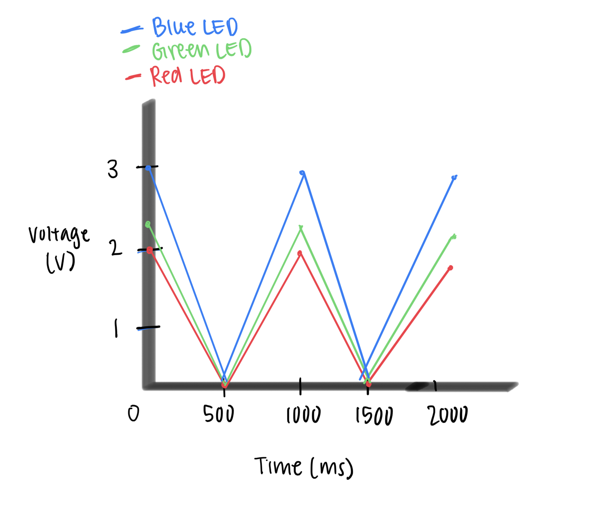

This assignment uses three LEDs (red, green, and blue) connected to Arduino Uno pins 3, 5, and 6. Each LED blinks independently through 330Ω resistors to safely limit current.
This assignment uses three LEDs (red, green, and blue) connected to Arduino Uno pins 3, 5, and 6. Each LED blinks independently through 330Ω resistors to safely limit current.
Each LED is connected to a pin (3, 5, or 6) through a resistor and then to GND.
This ensures that each LED can blink separately without affecting the others.
Resistor Calculation:
Using Ohm’s Law, we have the calculation R = (5 - 2) / 0.01 = 300 Ω, which is closest to 330.
// LEDs are connected to which pin numbers
const int RED_LED = 3;
const int GREEN_LED = 5;
const int BLUE_LED = 6;
void setup() {
// put your setup code here, to run once:
// Set each LED as an output
pinMode(RED_LED, OUTPUT);
pinMode(GREEN_LED, OUTPUT);
pinMode(BLUE_LED, OUTPUT);
}
void loop() {
// put your main code here, to run repeatedly:
// RED LED on for 500 ms and off
digitalWrite(RED_LED, HIGH);
delay(500);
digitalWrite(RED_LED, LOW);
// GREEN LED on for 500 ms and off
digitalWrite(GREEN_LED, HIGH);
delay(500);
digitalWrite(GREEN_LED, LOW);
// BLUE LED on for 500 ms and off
digitalWrite(BLUE_LED, HIGH);
delay(500);
digitalWrite(BLUE_LED, LOW);
}
The plot below shows voltage across each LED vs the time. I set all LEDs to blink 500 ms ON and 500 ms OFF. The ON voltage for red LED is about 2.0 V, Green LED about 2.2 V, Blue LED about 3.0 V.
I can blink up to 12 LEDs independently; since each of my LEDs uses about 10 mA current, that would be about 120 mA current.
When the LEDs blink faster than 60 times per second, it would look as if it's constantly on.
I used ChatGPT to help me debug my circuit. I was initially confused with the LED direction and how should it connect to the resistor, so my LEDs were not able to light up. I used AI to help me fix this issue by explaining to me that my LED should be placed across the center gap of the breadboard and my ground wire should be connected to the correct rail. After fixing these issues, my LEDs were able to blink and light up successfully.